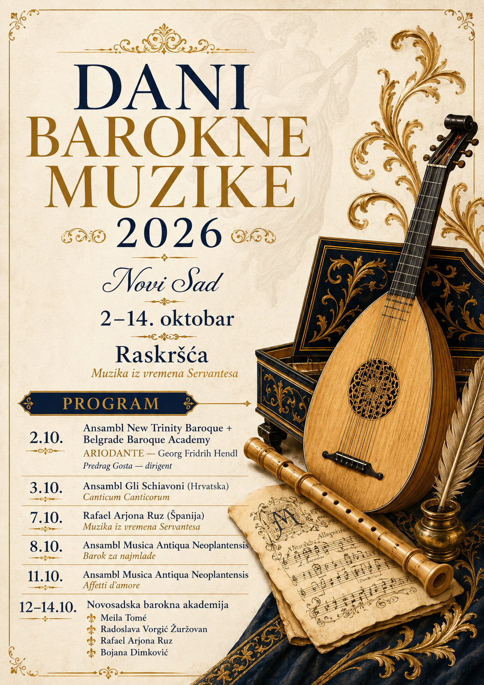
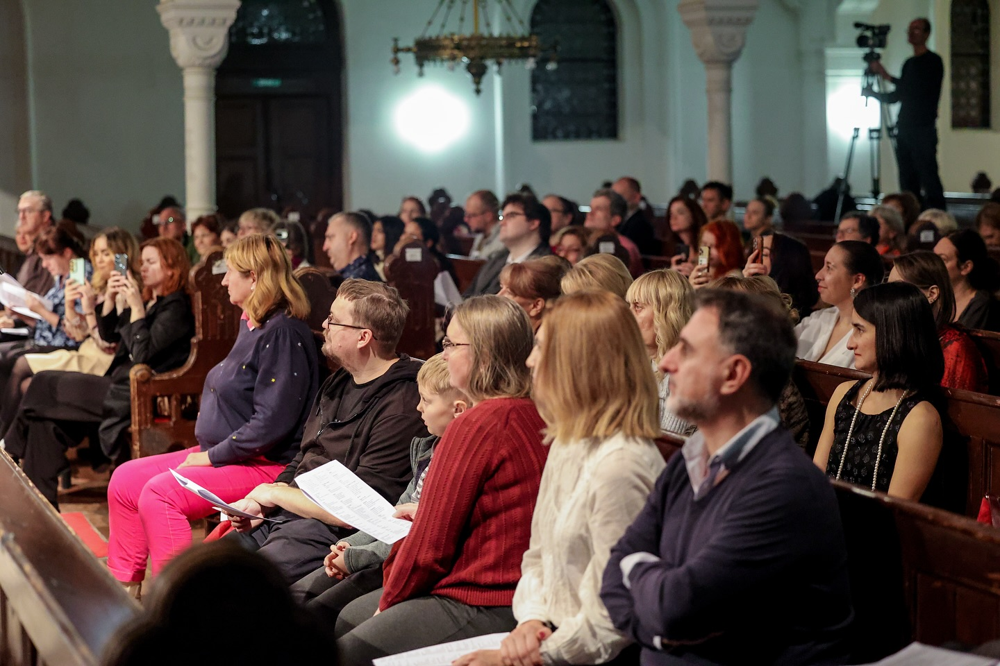

2 October 20262. oktobar 2026.
New Trinity Baroque & Beogradska barokna akademija
George Frideric Handel: Ariodante
Concert version
Conductor: Predrag GostaKoncertna verzija
Dirigent: Predrag Gosta
Venue: to be announcedLokacija: biće objavljena

11th Early Music Festival 11. festival rane muzike
Crossroads Raskršća
2–14 October 2026 2–14. oktobar 2026.
Carefully curated programmes of Early Music music with period instruments and specialised ensembles. Pažljivo osmišljeni programi rane muzike na istorijskim instrumentima i sa specijalizovanim ansamblima.
Masterclasses and workshops for students, young professionals and teachers interested in Early Music. Majstorski kursevi i radionice za studente, mlade profesionalce i profesore koji žele da se bave ranom muzikom.
Performances and activities that bring early music closer to local communities and new audiences. Koncerti i aktivnosti kojima ranu muziku približavamo lokalnoj zajednici i novoj publici.


The 11th edition of Days of Baroque Music in Novi Sad, Crossroads: Music from the time of Cervantes, takes place from 2 to 14 October 2026. Jedanaesto izdanje Dana barokne muzike u Novom Sadu, Raskršća: Muzika iz vremena Servantesa, održava se od 2. do 14. oktobra 2026. godine.
2 October 20262. oktobar 2026.
George Frideric Handel: Ariodante
Concert version
Conductor: Predrag GostaKoncertna verzija
Dirigent: Predrag Gosta
Venue: to be announcedLokacija: biće objavljena
3 October 20263. oktobar 2026.
Canticum Canticorum
Crkva Sv. Jurja, Petrovaradin
7 October 20267. oktobar 2026.
Music from the Time of CervantesMuzika iz vremena Servantesa
Vihuela and baroque guitarVihuela i barokna gitara
Museum of Vojvodina, Novi SadMuzej Vojvodine, Novi Sad
8 October 20268. oktobar 2026.
Musica Antiqua Neoplantensis / M.A.N.
Programme for childrenProgram za decu
Dečiji kulturni centar Novi SadDečiji kulturni centar Novi Sad
11 October 202611. oktobar 2026.
Affetti d’Amore
Crkva Sv. Elizabete, Ćirila i Metodija 11, Telep, Novi Sad
12–14 October 202612–14. oktobar 2026.
Masterclasses and final programmeMajstorski kursevi i završni program
Venue: to be announcedLokacija: biće objavljena
A short overview of recent editions of the festival. You can expand this section with more years, detailed programmes and photo galleries. Kratak pregled nedavnih izdanja festivala. Ovaj deo možete proširiti dodatnim godinama, detaljnim programima i foto-galerijama.
The 10th edition of Days of Baroque Music in 2025 presented seven concerts. The September and early October programmes were held in the Church of St Elizabeth in Telep, followed by two chamber recitals at the Museum of Vojvodina and a final opera production in the Novi Sad Synagogue. Deseto izdanje Dana barokne muzike 2025. godine donelo je sedam koncerata. Septembarski i oktobarski programi održani su u crkvi Sv. Elizabete u Telepu, zatim dva kamerna resitala u Muzeju Vojvodine i završnu operu u Novosadskoj sinagogi.



The 2024 edition of Days of Baroque Music focused on vocal and instrumental Baroque repertoire, with special attention to collaboration between local musicians and international guests. Izdanje 2024. godine bilo je posvećeno vokalnom i instrumentalnom baroknom repertoaru, sa posebnim naglaskom na saradnju lokalnih muzičara i međunarodnih gostiju.
For all questions about the festival, cooperation proposals or press materials, please contact us:
E-mail: rana.muzika@gmail.com
Social media: Facebook / Instagram
The Days of Baroque Music in Novi Sad festival is organised by VEMA - Vojvodina Early Music Association.
Za sva pitanja o festivalu, predloge saradnje ili materijale za medije, možete nas kontaktirati:
E-mail: rana.muzika@gmail.com
Društvene mreže: Facebook / Instagram
Festival Dani barokne muzike u Novom Sadu organizuje VEMA – Vojvođansko udruženje za ranu muziku.